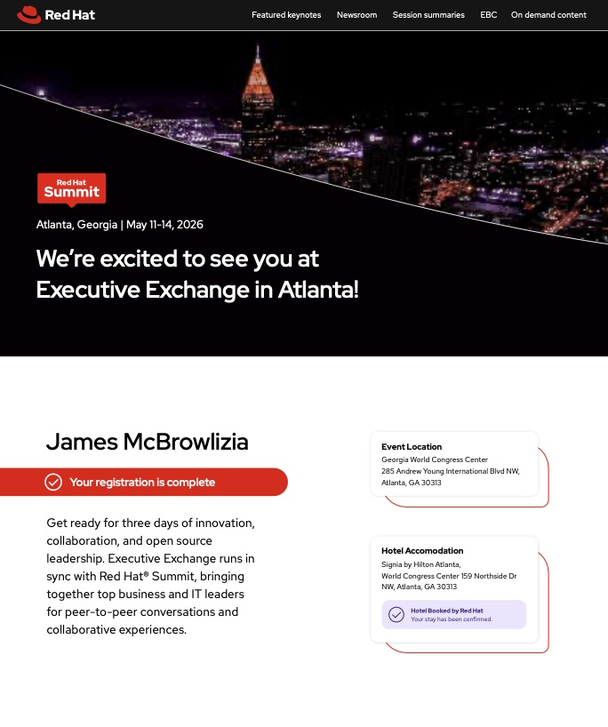
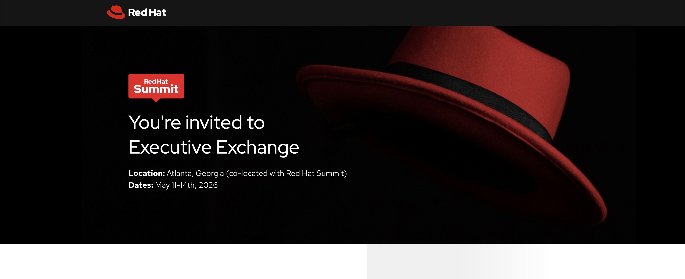
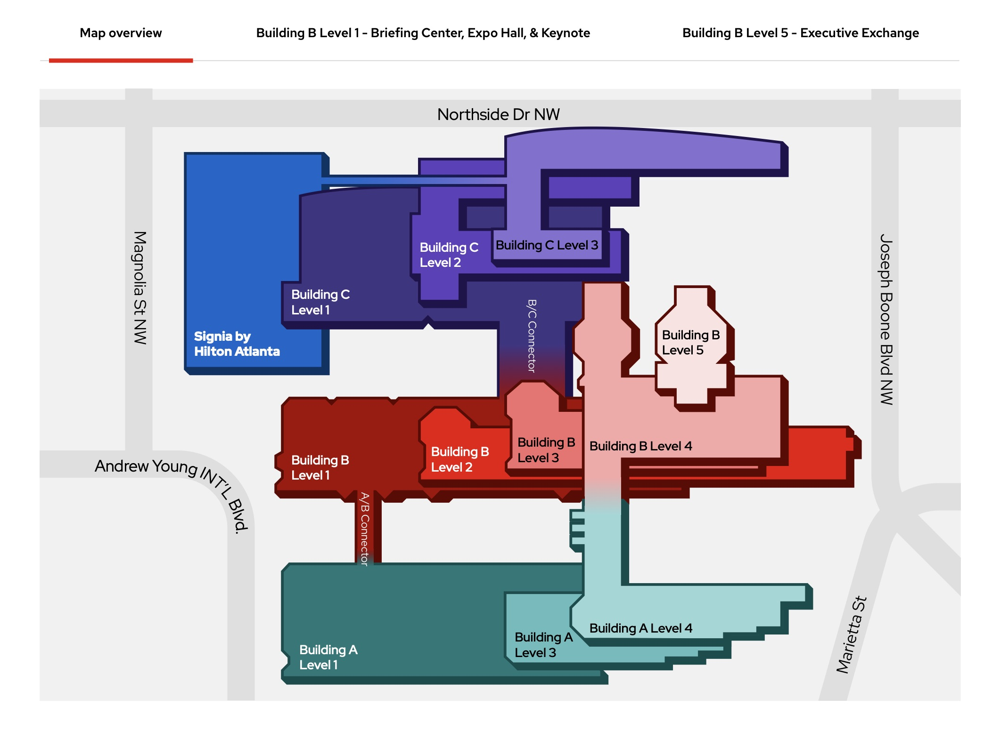

Case Study · Red Hat
Red Hat needed personalized agendas for 150+ executives at their yearly Summit. We replaced a PDF process and 50 duplicate templates with one smart WordPress build that scales, updated instantly.
The Problem
Every year, Red Hat's executive clients attending their Summit and Executive Exchange received personalized agendas and event information. The format: a PDF. The process: manually customized, hard to update, and impossible to scale.
When the team wanted to move to the web, for easy access, real-time changes, and a better executive experience, the existing approach was to duplicate a template 50 times and manually customize each one. We'd been doing it that way for three years.
The ask: can we automate it? Build something that serves 150+ unique executives without building 150+ unique sites?
Before
After
The Scale
The numbers tell the story. By building a data-driven template instead of duplicating pages, we were able to serve significantly more executives with significantly less manual effort.
1
template that powers all executive experiences
300+
total microsites (pre + post event, per executive)
3×
more executives reached vs. the previous approach
What I Did
I owned the design and the implementation end-to-end. That meant designing the microsite template, then actually building it, which pushed me into WordPress territory I hadn't been in before.
The technical approach used Loop Grids and Custom Post Types to pull executive-specific data from Red Hat's Laravel system directly into the template. One design. One codebase. Every executive gets their own personalized experience.
This was my first time working with WordPress as a true CMS with custom code, not just a page builder. Learning how data modeling works at that level changed how I think about design systems entirely.
Custom Post Types (CPT UI)
Built custom content types to house executive-specific data (agendas, hotel info, session details), all structured for the template to pull from.
Loop Grids + ACF
Used Advanced Custom Fields and Loop Grids in Elementor to dynamically populate each microsite with the right content for each executive.
Laravel Data Integration
Connected the template to Red Hat's existing Laravel system so executive data flows directly in, no manual copy-paste between systems.
Template design
Designed the microsite template in Elementor/WordPress, fully on-brand with Red Hat's visual system: clean, executive-appropriate, easy to update.
The Work
Each executive lands on a microsite that feels made just for them: their name, their agenda, their hotel, their sessions. The design is consistent and on-brand; the content is entirely their own.


Invitation screen, Executive Exchange

Event map showing the scale of the experience
The Outcome
"A workflow we'd been doing for years for fewer people was done twice as fast for triple the executives, fully customized to every individual."
Beyond the scale, this project gave me a new mental model for design systems. When you build for data, not for pages, the template becomes the product, not the individual sites. That's a shift in thinking that now informs everything I build.
3×
more executives served vs. previous years
2×
faster to produce than the old duplicate approach
1st
time building WordPress with custom data modeling